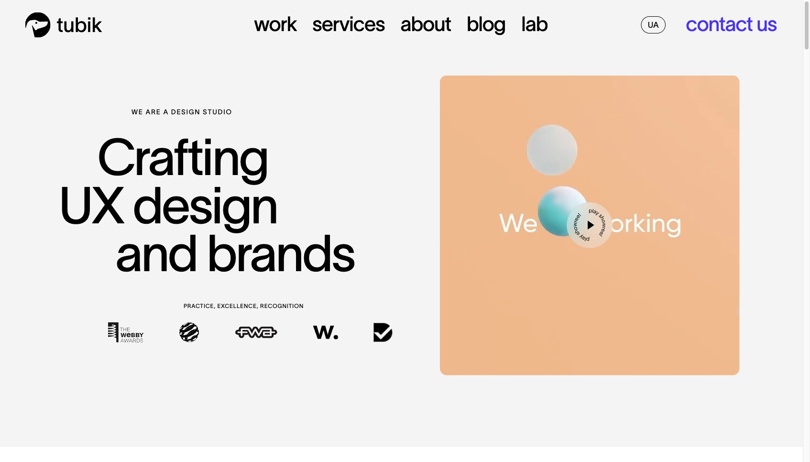
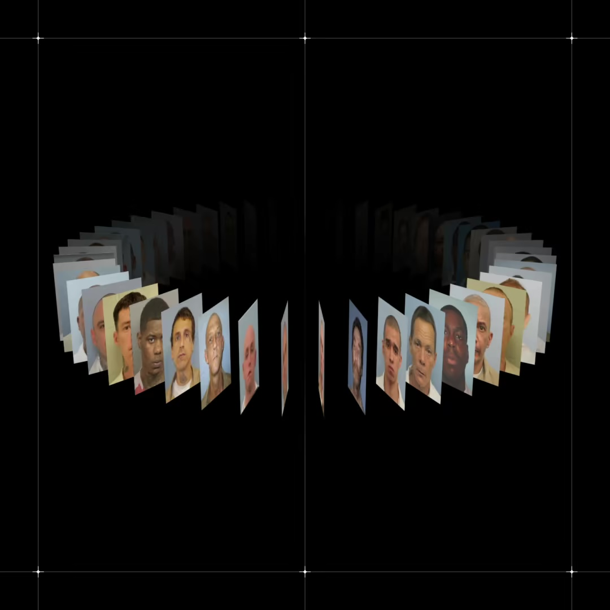
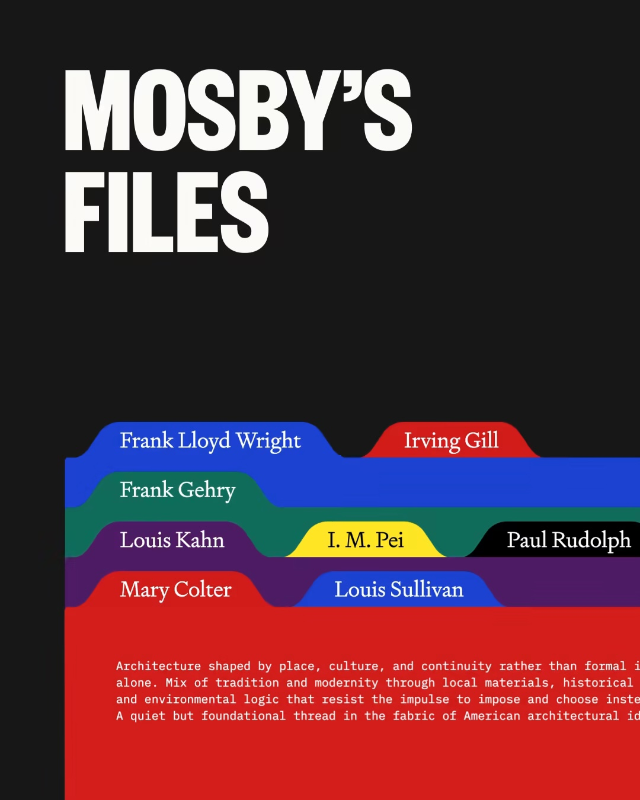

Tubik Studio 首页。样本：tubikstudio.com
浅灰整屏。左边三行大字，右边一块圆角方片子正在播。奖项很小，排在声明下面。上面那条导航，词很大，contact us 是唯一的蓝。
看起来像贴纸墙，像三维。打开上面那一段：没有 canvas，没有 Three。片子是他们烤好的 1080 方 MP4。

#F4F4F4。片子 37vw 见方，圆角 0.85vw。蓝只有 contact us，#4C32FF。看见：一句工作室声明，一块正在播的作品。不是案例网格。
不是三维。WebGL 零。GSAP 有，用来滑导航、跟鼠标。立体来自片子里的道具，不来自浏览器。
整站字号跟 1vw 走。标题 6.25vw，行高 95%，字距 -0.2vw。三行不是居中，也不是右齐，是三条手写的左边距：6.3 / 1.5 / 8.5 vw。
图从原站下载。标志、奖项、播放钮、showreel 都是他们的文件。原字体是 TWK Lausanne。这页用免费的 Inter Tight 顶上，数字没改。
上面那一屏同时开着三件事。页顶三个按钮可以单独关掉。
片子在转。视频 1080×1080，object-fit: cover 填进 37vw 的方盒。静音、循环。玻璃圆钮 6.25vw，底 rgba(236,236,236,.4) 加 20px 模糊。鼠标进方盒，钮跟着走，自己的箭头藏起来。
三行错位。三个独立的 h1，class 叫 b1 b2 b3。关掉按钮，三行回到同一条左边。你会看见：错位才是那句「Crafting UX design and brands」的形状，不是字本身。
词会滑。每个导航词写两遍，中间一个 <br>。盒子 overflow: hidden，只露出一行。悬停把整块上移 50%。缓动 cubic-bezier(.215, .61, .355, 1)，0.2 秒。原站把同一套用在 contact us 上，颜色换成蓝。
往下滚，原站还有观点笔记横滑、作品墙、客户栏。那是下一篇。作品墙标题到 10vw，封面是视频。Mosby’s Files 已经收过，在 living/mosby。


#F4F4F4。导航透明覆在上面，高 6.15vw，左右垫 3.1vw。display: flex; justify-content: space-between; align-items: center。左垫 5.729vw，右垫 7.813vw。overflow: hidden。translateY(-50%)。#4C32FF。.studio { background: #F4F4F4; }
.line { font-size: 6.25vw; line-height: 95%; letter-spacing: -.2vw; }
.b1 { margin-left: 6.3vw; }
.b2 { margin-left: 1.5vw; }
.b3 { margin-left: 8.5vw; }
.reel { width: 37vw; height: 37vw; border-radius: .85vw; overflow: hidden; }
.play {
width: 6.25vw; height: 6.25vw; border-radius: 100vw;
background: rgba(236,236,236,.4); backdrop-filter: blur(20px);
}
.nav-a { height: 2.15vw; overflow: hidden; font-size: 2vw; font-weight: 300; }
.nav-a:hover .slide { transform: translateY(-50%); }
.contact { color: #4C32FF; }
原站是 Webflow，字体 Lausanne。做自己的工作室首页：先写三行声明，再放一块自己的方片子。不要先铺作品墙。